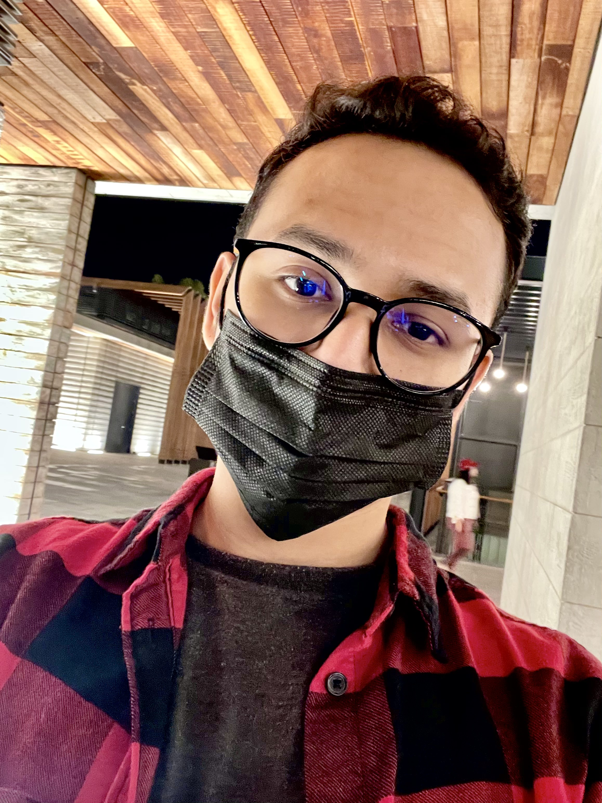

Welcome to my homepage. I am a Computer Science sophomore studying in CSULB.
I have traveled to 4 continents and 9 countries. I have traveled solo to another country at the age of
11, and have done it 5 times before I turned 18. I love to watch educational and diverse content on
YouTube. I am a watch Netflix, exercise, visit my friends and make myself as
much occupied as possible. I plan to make travel as much accessible for me after I finish graduation. I
am very interested in a wide range of cultures, that are often unheard of by the West.